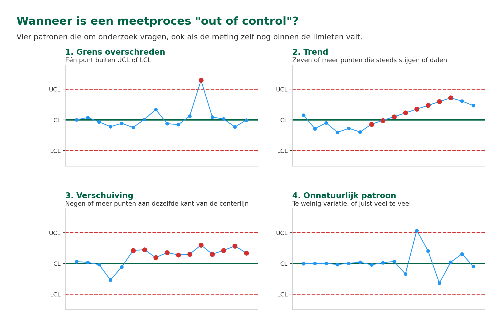
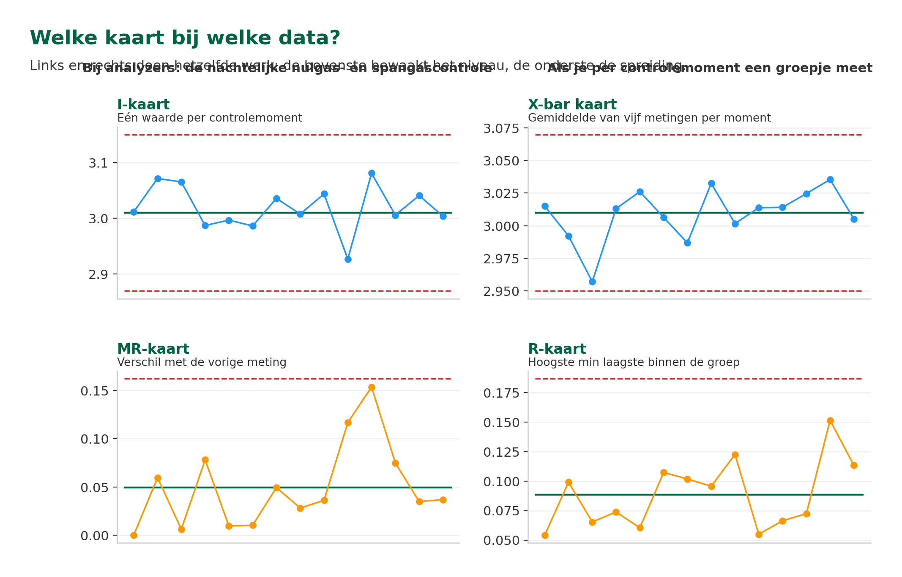

ANA – Module 4
2.1 Leerdoelen
Na het volgen van dit hoofdstuk kun je:
- Uitleggen wat Statistical Quality Control (SQC) is en waarom het belangrijk is voor kwaliteitscontrole
- De basisprincipes van controlekaarten beschrijven
- Het verschil herkennen tussen een analyzer die 'in control' of 'out of control' is
- Verschillende soorten controlekaarten benoemen (Shewhart, CUSUM) en hun toepassing begrijpen
- Uitleggen welke metingen je bij een continue analyzer op een controlekaart zet, en waarom de procesmeting zelf daar niet geschikt voor is
- Beschrijven wat je stap voor stap doet als er een SQC-alarm binnenkomt
2.2 Van schoolcijfers naar proceskwaliteit: Waarom SQC?
Je rapportcijfers als kwaliteitsbewaking
Stel je voor: je volgt een opleiding en houdt je cijfers bij. De eerste drie tentamens haal je een 7,0, een 7,2 en een 6,8. Dat schommelt een beetje, maar je gemiddelde is stabiel rond de 7. Daar maak je je geen zorgen over.
Maar stel dat je vierde tentamen ineens een 4,5 is. Dan gaan er alarmbellen af: er is iets veranderd. Misschien heb je te weinig gestudeerd, misschien was het tentamen anders dan verwacht. Het punt is: die plotselinge afwijking is een signaal dat er iets aan de hand is.
Dit is precies wat Statistical Quality Control (SQC) doet voor meetprocessen in de industrie. Je houdt de meetwaarden van je analyzer bij over tijd, en je let op patronen. Kleine schommelingen zijn normaal. Die horen bij elk meetproces. Maar als de waarden ineens gaan afwijken, is dat een teken dat er iets afwijkend is in het meetsysteem.
Van momentopname naar continu bewaken
In Module 4 Hoofdstuk 1 heb je geleerd hoe je met validatie op een specifiek moment je analyzer controleert met standaarden. Wat gebeurt er op langere termijn met meerdere validatie resultaten? Hoe weet je of de meetkwaliteit niet langzaam verslechtert?
Dat is waar SQC om de hoek komt kijken. SQC geeft je een statistische manier om de meetkwaliteit continu te bewaken. Niet door steeds opnieuw te kalibreren, maar door slimme patronen te herkennen in de meetdata die je toch al verzamelt.
In Module 2 heb je geleerd over standaarden en referentiematerialen waarmee je analyzers kalibreert. Die standaarden spelen ook een rol bij SQC: je gebruikt controlemonsters, vergelijkbaar met je kalibratiestandaarden, om regelmatig te checken of je analyzer nog goed presteert. Het verschil is dat je bij kalibratie het instrument afstelt, en bij SQC alleen registreert en bewaakt.
2.3 Wat is SQC en hoe werkt het?
De basis: normaal gedrag versus afwijkend gedrag
Elke analyzer heeft natuurlijke variatie in meetresultaten, voortkomend uit de nauwkeurigheid van het instrument. Als je tien keer achter elkaar hetzelfde monster meet, krijg je niet tien keer exact dezelfde waarde. De ene keer meet je 50,1 ppm, de volgende keer 49,8 ppm, dan weer 50,3 ppm. Dat is normaal. Het komt door kleine schommelingen in temperatuur, druk, flow, elektronica en andere factoren.
SQC maakt onderscheid tussen twee soorten variatie:
- Natuurlijke variatie (common cause). De kleine, willekeurige schommelingen die bij elk meetproces horen. Dit is als het trillen van je hand bij het schieten: het hoort erbij, en je kunt het niet helemaal elimineren.
- Bijzondere variatie (special cause). Onverwachte veranderingen die wijzen op een probleem. Dit is als plotseling de wind gaat waaien bij het schieten: er is een externe factor die je resultaten beïnvloedt.
Het doel van SQC is om bijzondere variatie zo vroeg mogelijk te detecteren, zodat je kunt ingrijpen voordat het een echt probleem wordt.
Denk aan wat je in Module 3 hebt geleerd over sample conditioning: als een filter langzaam dichtslibt, verandert de flow naar de analyzer geleidelijk. De meetwaarde drijft mee af, maar zo langzaam dat je het op het scherm niet meteen ziet. Een controlekaart pikt dit wél op.
Waar gebeurt SQC in de praktijk?
Goed, dit is de theorie. Maar wie tekent die grafieken, en waar kun je ze zien? Kort gezegd: de analyzer levert datapunten, een systeem maakt er controlekaarten van, en mensen houden ze in de gaten. Hoe dat praktisch werkt, zie je hieronder.
- De analyzer levert de datapunten. Bij een continue analyzer (een O₂-rookgasanalyzer, een pH-meter of een CO-meter) is de procesmeting juist niet het datapunt: die varieert immers gewoon mee met het proces. Wat wél geschikt is, zijn de controlemetingen. Met een vast interval meet de analyzer een nulgas en een spangas, en die resultaten gaan op de controlekaart.
- Een systeem tekent de kaart. Dat kan een eenvoudig of een uitgebreid softwarepakket zijn; bij sommige gaschromatografen (zoals een Valmet Maxum II) zit de SQC-module zelfs in de software van de analyzer zelf. Waar de kaart ook getekend wordt: het systeem berekent de centerlijn, de UCL en de LCL, en bewaart de historie.
- Het systeem toetst elk nieuw resultaat aan die limieten. Valt een controlemeting erbuiten, dan verschijnt er een alarm in de controlekamer en weet de operator dat de meetdata niet meer te vertrouwen is.
- Jij gaat op pad. Voordat je vertrekt kijk je eerst naar de kaart: gaat het om een plotselinge sprong of om een langzame drift? Dat scheelt zoeken. Ter plekke denk je aan vervuiling van de meetcel, een lekkage in het sample conditioning systeem, of een validatiesample dat verkeerd is aangeboden.
- De kwaliteitsafdeling kijkt naar de lange termijn. Voor sommige meetsystemen is SQC zelfs wettelijk verplicht. Bij analyzers die rookgasemissies bewaken (een CEMS, een Continuous Emissions Monitoring System) schrijven de Europese regels met een vast interval een kwaliteitscontrole op de meetdata voor. De kaarten worden gebruikt bij die controle en bij audits.
Wat is het doel van Statistical Quality Control?
A) Het vervangen van de periodieke kalibratie
B) Het systematisch bewaken van de meetkwaliteit over tijd, zodat je problemen vroeg ziet
C) Het exact berekenen van de meetfout van een analyzer
D) Het bepalen welke analyzer je moet aanschaffen
FOTO NOG TE MAKEN — foto 5: Nulgas- en spangasflessen bij de analyzer. De flessenopstelling met het overnamestation, waaruit de analyzer zijn dagelijkse controlemetingen betrekt.
2.4 Controlekaarten: Je meetproces in beeld
Wat is een controlekaart?
Een controlekaart is een grafiek waarin je de meetresultaten over tijd uitzet. Het lijkt op een gewone tijdgrafiek, maar met drie belangrijke horizontale lijnen:
- Centerlijn (CL). Het gemiddelde van je metingen. Dit is de waarde waar je omheen verwacht te schommelen als alles goed gaat.
- Bovenste controlelimiet (UCL, Upper Control Limit). De bovengrens van de normale variatie. Metingen boven deze lijn zijn verdacht.
- Onderste controlelimiet (LCL, Lower Control Limit). De ondergrens van de normale variatie. Metingen onder deze lijn zijn verdacht.

De opbouw van een controlekaart, met de cijfers uit het O2-voorbeeld verderop in dit hoofdstuk.
De controlelimieten worden berekend op basis van de natuurlijke variatie van het proces. Standaard liggen ze op 3 standaarddeviaties (3σ) boven en onder het gemiddelde. Dit betekent dat als alles normaal is, 99,7% van je metingen tussen de UCL en LCL zal vallen.
"In control" versus "out of control"
Een proces is 'in control' als:
- Alle meetpunten liggen tussen de UCL en LCL
- Er zijn geen duidelijke patronen (trends, verschuivingen)
- De punten schommelen willekeurig rond de centerlijn
Een proces is 'out of control' als je een van deze signalen ziet:
- Grens overschreden. Een punt boven UCL of onder LCL.
- Trend. 7 of meer opeenvolgende punten die steeds stijgen of steeds dalen.
- Verschuiving (bias). 9 of meer opeenvolgende punten aan dezelfde kant van de centerlijn.
- Onnatuurlijk patroon. Te weinig variatie (alle punten vlak bij de centerlijn) of juist veel te veel variatie.

De vier patronen die om onderzoek vragen, ook als de meting binnen de limieten blijft.
Een onnatuurlijk patroon betekent niet per se dat de meetwaarde fout is. Het betekent dat er iets veranderd is in het proces dat je moet onderzoeken. Misschien is het een echte procesverandering, misschien een probleem met de analyzer.
Wat betekent het als een meetpunt boven de UCL ligt?
A) De meting is per definitie fout en moet verwijderd worden
B) Dit is normaal en gebeurt bij ongeveer de helft van de metingen
C) De analyzer moet onmiddellijk vervangen worden
D) Er is waarschijnlijk een bijzondere oorzaak die onderzocht moet worden
2.5 Soorten controlekaarten
Shewhart-kaarten: Het werkpaard
De Shewhart-kaart is de meest gebruikte controlekaart en het type dat je als technicus het vaakst zult tegenkomen. Welke variant je gebruikt, hangt af van hoeveel metingen je per controlemoment hebt.
- I-kaart (individuele metingen). Elk controlemoment levert één waarde, en die zet je als los punt op de kaart. Dat is bij analyzers de gewone situatie: de nachtelijke controle met nulgas en spangas geeft per gas één meetwaarde. De I-kaart laat zien of het niveau van je metingen verschuift.
- MR-kaart (moving range). Het verschil tussen twee opeenvolgende metingen. Deze kaart hoort bij de I-kaart en laat zien of de spreiding verandert: springen de metingen van dag op dag steeds verder uit elkaar, dan worden ze minder herhaalbaar.
- X-bar en R-kaart. Doe je per controlemoment een groepje metingen, bijvoorbeeld vijf herhalingen achter elkaar of een reeks labbepalingen, dan zet je het gemiddelde van dat groepje op de X-bar kaart en het verschil tussen de hoogste en de laagste op de R-kaart. Hetzelfde principe, alleen werk je met groepjes in plaats van met losse metingen.

Eén waarde per controlemoment vraagt om een I- en MR-kaart; een groepje metingen om X-bar en R.
Je gebruikt ze altijd in paren: de ene kaart bewaakt het niveau van je metingen, de andere de spreiding. Eén kaart alleen is niet genoeg, want het niveau kan prima kloppen terwijl de spreiding oploopt, en andersom.
Herinner je het verschil tussen nauwkeurigheid en precisie uit Hoofdstuk 1 (§1.4)? De niveaukaart (de I-kaart of de X-bar kaart) bewaakt de nauwkeurigheid: verschuift het gemiddelde weg van de juiste waarde? De spreidingskaart (de MR-kaart of de R-kaart) bewaakt de precisie: worden de metingen minder herhaalbaar? Twee problemen, twee kaarten.
Praktijkvoorbeeld: Shewhart-kaart bij een O₂-rookgasanalyzer
Bij een verbrandingsinstallatie hangt een O₂-analyzer in het rookgaskanaal. Denk aan een stookfornuis in een raffinaderij of een stoomketel van een chemiefabriek: beide hebben rookgasemissies die bewaakt moeten worden. De analyzer is onderdeel van een CEMS, het meetsysteem waarmee het bedrijf zijn uitstoot rapporteert (zie §2.3). Voor dit soort emissiemetingen is dagelijkse kwaliteitscontrole op de meetdata wettelijk verplicht, en dat gebeurt via SQC.
De analyzer doet elke nacht automatisch twee controlemetingen met gecertificeerde testgassen: eerst een nulgas (0% O₂), daarna een spangas van 3,0% O₂. Die twee controlemetingen zijn de datapunten voor de Shewhart-kaart, niet de procesmetingen overdag.
Na drie maanden data verzamelen op de span-controle (3,0% O₂) blijkt:
- Gemiddelde (CL): 3,01% O₂
- UCL: 3,15% O₂
- LCL: 2,87% O₂
📖 Week 1 t/m 10: alle dagelijkse controlemetingen schommelen rond 3,01%. Alles normaal.
Week 11: de controlemeting springt naar 3,12%. Nog binnen de limieten, maar opvallend hoog.
Week 12: de controlemeting stijgt naar 3,18%. Boven de UCL.
Actie: de technicus gaat naar het analyzerhuis en onderzoekt de oorzaak. Het blijkt dat de meetcel vervuild is geraakt door deeltjes uit de rookgassen. Na reiniging van de meetcel en herkalibratie keert de controlemeting terug naar 3,02%. Wat er is gebeurd, wat de oorzaak was en hoe het is opgelost, wordt vastgelegd in het kwaliteitslogboek. De kwaliteitsafdeling gebruikt dat logboek bij de rapportage aan de overheid.
CUSUM-kaarten: De trendspotter
De CUSUM-kaart (Cumulative Sum) werkt anders dan de Shewhart-kaart. In plaats van elk meetpunt apart te bekijken, telt de CUSUM-kaart alle afwijkingen van het gemiddelde bij elkaar op.
Het grote voordeel: een CUSUM-kaart detecteert kleine, geleidelijke verschuivingen veel sneller dan een Shewhart-kaart. Als een analyzer langzaam gaat driften (bijvoorbeeld 0,05% per week), kan het weken duren voordat een Shewhart-kaart alarm slaat. Een CUSUM-kaart pikt dit veel eerder op, omdat de kleine afwijkingen zich optellen.

Dezelfde langzame drift op twee kaarten. De Shewhart blijft binnen de limieten, de CUSUM loopt weg.
Wanneer gebruik je welke kaart?
- Shewhart-kaart. Voor het detecteren van plotselinge, grote veranderingen. Eenvoudig te begrijpen en te gebruiken. Het standaard werkpaard.
- CUSUM-kaart. Voor het detecteren van kleine, geleidelijke veranderingen (drift). Complexer, maar gevoeliger voor langzame trends.
In de praktijk zul je als technicus vooral met Shewhart-kaarten werken. CUSUM-kaarten worden vaker door engineers of kwaliteitsafdelingen ingezet bij kritische metingen.
Wat is het verschil tussen een Shewhart-kaart en een CUSUM-kaart?
A) Shewhart is voor gassen, CUSUM voor vloeistoffen
B) Shewhart ziet kleine drift, CUSUM ziet grote sprongen
C) Shewhart ziet grote, plotselinge veranderingen; CUSUM ziet kleine, geleidelijke drift
D) Er is geen verschil, het zijn twee namen voor dezelfde kaart
📖 Praktijkvoorbeeld: CUSUM bij online analyzer versus laboratoriumreferentie
Bij een raffinaderij meet een online analyzer continu het zwavelgehalte in een dieselstroom. De analyzer staat in een analyzerhuis vlak naast het proces. Hij neemt zelf automatisch een sample uit de leiding, meet het zwavelgehalte, en stuurt de meetwaarde continu door naar de controlekamer.
Om het halve etmaal neemt de operator daarnaast handmatig een grab-sample uit dezelfde leiding. Dat sample gaat naar het laboratorium en wordt daar gemeten op een gecertificeerd labinstrument. De uitkomst van het lab is de referentiewaarde.
De online meting en de labmeting zouden binnen enkele ppm aan elkaar gelijk moeten zijn. In de eerste weken is dat ook zo.
Na ongeveer zes weken pikt de CUSUM-kaart iets op wat op een Shewhart-kaart nog ongemerkt blijft: het verschil (online minus lab) begint langzaam weg te zakken. Per afzonderlijke meting is het verschil te klein om alarm te slaan, maar bij elkaar opgeteld (cumulatief) wordt duidelijk dat er een drift in zit.
De technicus onderzoekt dit en ontdekt dat de detectorbron in de online analyzer aan het verzwakken is. Dat is een normaal verouderingsverschijnsel, maar zonder CUSUM was het pas opgemerkt als de online meting helemaal buiten specificatie zou raken. Nu wordt de bron tijdig preventief vervangen.
Hetzelfde type toepassing kom je ook tegen in de chemie. Denk aan een pH-meting in een neutralisatiesectie van een afvalwaterbehandeling, of een continue concentratiemeting op een monomeer-grondstof voor een polymerisatiereactor, telkens vergeleken met labreferentie. En buiten de analyzerwereld werkt dezelfde CUSUM-logica op twee redundante drukmetingen van dezelfde leiding (trip-transmitter versus regeltransmitter): je ziet dan al heel vroeg of de twee onderling gaan afdrijven.
2.6 SQC in de dagelijkse praktijk
Hoe pas je SQC toe als technicus?
In veel moderne plants houdt een systeem de controlekaarten automatisch bij en slaat het alarm als een meetproces out of control raakt. Soms is dat een aparte kwaliteitsmodule naast het DCS, soms zit het in de software van de analyzer zelf (zie §2.3). Waar het ook draait: als technicus moet je begrijpen wat die alarmen betekenen en hoe je erop reageert.
SQC helpt ook bij predictief onderhoud. Een voorbeeld: de lichtbron in een analyzer veroudert langzaam, waardoor de lamp steeds minder licht geeft. Op de controlekaart zie je dat terug als een geleidelijke drift weg van de middellijn. Zo kun je de lamp vervangen voordat de meting echt onbetrouwbaar wordt.
Een typische workflow ziet er ongeveer zo uit. We nemen hieronder een O₂-rookgasanalyzer als voorbeeld om de stappen concreet te maken, maar de volgorde is hetzelfde voor andere analyzers in zowel de raffinage als de chemie:
- Het systeem meldt: 'O₂-analyzer analyzerhuis 3, SQC-alarm: punt boven UCL'.
- Je bekijkt de controlekaart: Is het een enkel punt, of is er een trend?
- Je zoekt de oorzaak: Vervuiling? Drift? Sample conditioning probleem? Testgas verlopen?
- Je lost het probleem op (schoonmaken, kalibreren, filter vervangen, etc.)
- Je controleert of de metingen weer 'in control' zijn
- Je documenteert wat je hebt gevonden en hoe je het probleem hebt opgelost.
Veelvoorkomende oorzaken van SQC-alarmen:
- Vervuiling. Meetcel of optische componenten zitten dicht. Denk aan roetdeeltjes in rookgassen bij een verbrandingsinstallatie, katalysatorstof of polymeerdeeltjes in een chemische processtroom, of afzetting op een pH-elektrode in waterig procesmedium.
- Sample conditioning probleem (Module 3). Verstopping in een filter, lekkage in de sampleleiding, verstoring van de drukregeling, of condensaat dat de leiding blokkeert.
- Degradatie van de sensor. Slijtage of veroudering van de meetcel. Voorbeelden: een glaselektrode van een pH-meter die op leeftijd raakt, een verzwakte detectorbron in een X-ray analyzer, of een afnemende scheidingskolom in een GC.
- Verandering in de samplematrix (Module 2). Als de processamenstelling verandert, kan de analyzer anders reageren. Dit zie je typisch bij batchprocessen in de chemie (andere grondstof, ander recept), of als een raffinaderij overschakelt op een andere ruwoliesoort.
- Elektronicaprobleem. Een storing, los contact, of corrosie op connectoren in het analyzerhuis.
- Verlopen of verkeerd testgas. Het gas waarmee je controleert is zelf al niet meer betrouwbaar, bijvoorbeeld omdat de cilinder over datum is of omdat per ongeluk de verkeerde concentratie is aangesloten.
In Module 3 (Hoofdstuk 2) heb je geleerd over het verschil tussen labsamples en continue metingen. SQC werkt voor allebei, maar bij continue analyzers levert het de meeste winst: die leveren dag en nacht controledata, dus een afwijking valt er sneller in op.
Wanneer herbereken je de limieten?
De centerlijn en de controlelimieten zijn berekend over een periode waarin het meetproces stabiel was. Verandert er iets legitiems aan dat proces, dan horen die limieten mee te veranderen. Denk aan een nieuwe meetcel, een ander meetbereik, of een nieuwe cilinder testgas met een iets andere gecertificeerde waarde.
Doe je dat niet, dan meet je de nieuwe situatie af tegen de oude norm. Dat gaat twee kanten op: de kaart blijft alarmeren terwijl er niets aan de hand is, of hij zwijgt terwijl de spreiding intussen is opgelopen. In beide gevallen gaan mensen de kaart negeren, en dan heb je er niets meer aan.
De regel is simpel. Nieuwe limieten bereken je pas nadat je opnieuw een stabiele periode hebt gemeten, en je legt vast waarom je ze hebt aangepast. Dat laatste is niet alleen netjes: bij een CEMS is het onderdeel van wat de auditor wil zien.
📖 Praktijkvoorbeeld: SQC maakt marge-optimalisatie mogelijk bij het blenden van diesel
Bij het blenden van diesel mengt een raffinaderij verschillende componenten tot een eindproduct dat precies aan de specificatie moet voldoen. Neem het zwavelgehalte: de specificatie is maximaal 10 mg/kg. Een online analyzer meet het zwavelgehalte van de blend continu.
De blender zit klem tussen twee kanten. Blend je te hoog, dan gaat het product over de limiet en is de batch off-spec: die mag de deur niet uit en moet opnieuw verwerkt worden. Blijf je voor de zekerheid ver onder de limiet, dan gebruik je meer van de dure, diep ontzwavelde component dan nodig is. Dat heet giveaway: je geeft kwaliteit weg waar de klant niet voor betaalt.
Hoe dicht je tegen de specificatie aan durft te blenden, wordt bepaald door de spreiding (sigma) van je meting. Meet de analyzer met een kleine, stabiele sigma, dan kun je de blendtarget vlak onder de limiet leggen, bijvoorbeeld op 9 mg/kg. Wordt de spreiding groter, dan moet je een grotere veiligheidsmarge aanhouden en zakt je target, met meer giveaway als gevolg. Hoe strakker je op die ene sigma zit, hoe meer marge er te verdienen valt.
En daar komt SQC om de hoek kijken: de controlekaart bewaakt continu of de spreiding van de analyzer klein en stabiel blijft. Ziet de technicus de spreiding op de kaart toenemen, bijvoorbeeld door een vervuilde meetcel of een verouderende detector, dan is dat het signaal om de analyzer na te kijken voordat de blender gedwongen wordt met extra marge te blenden. Bij blends van duizenden tonnen tikt elke extra marge-ppm direct door in de kosten.

De spreiding van je meting bepaalt hoe dicht je tegen de specificatie durft te blenden.
In Module 1 (Hoofdstuk 2) heb je geleerd over gasdetectiesystemen die continu de veiligheid bewaken in analyserhuizen. Voor dit soort veiligheidskritische metingen is SQC extra belangrijk: een gasdetector die langzaam drijft zonder dat iemand het merkt, kan het verschil maken tussen tijdig alarm en een ongeluk.